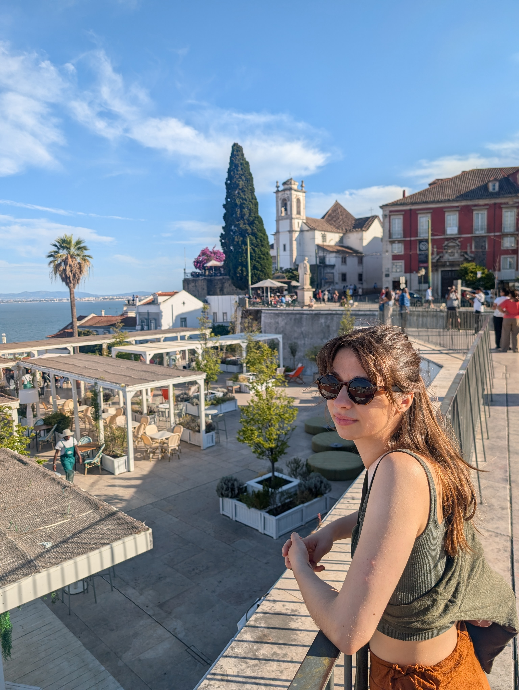

hi, i'm hannah!:)
I have an interdisciplinary background in computational social science, NLP, and discourse analysis. I'm interested in how computational and quantitative methods can help us understand political and social phenomena, particularly through the study of language and communication
Education
Universität Potsdam
Universität des Saarlandes
Experience
Weizenbaum Institut
Assisted in the development of a Qualitative Text Labelling Framework (QLTF) to analyze epistemological practices in data-intensive research and exploring the use of LLMs for automated annotation and workflow support
Universität Potsdam
Modeled complex planning problems using ASP and preference optimization; produced tutorials and documentation for reproducible workflows
Universität des Saarlandes
Mentored first-semester students and promoted the BA Language Science through outreach initiatives
